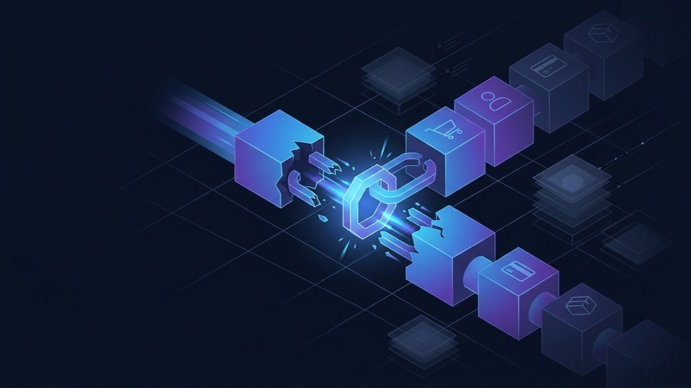

WooCommerce Site Down or Broken? Common Fixes Before You Panic
WooCommerce is not one system, it is WordPress plus a payment gateway plus a rule engine plus usually a caching layer. Fixing it fast means knowing which of those four just failed.

WooCommerce is not one piece of software. It is WordPress, plus a payment gateway, plus a shipping and tax rule engine, usually with a caching layer sitting on top of all three. Checkout is the one moment every part of that chain has to work correctly at the same time, which is exactly why it is the most common place things quietly break — and why "just reinstall the plugin" so often fails to fix anything.
Isolate the layer that actually broke
Before changing anything, spend five minutes narrowing down which layer is actually failing. It saves hours of fixing things that were never broken.
- Does it happen in a private/incognito window, with an empty cart? If yes, this is a WordPress, plugin or theme problem for every visitor — not a customer-specific cache or session issue.
- Does it happen with every payment method, or just one? Every method points to WooCommerce or the theme; one method points at that specific gateway.
- What changed recently? A plugin update, a theme update, a WooCommerce or WordPress core update, a new plugin installed. Most breakage traces directly to the last thing that changed, so check your update log before anything else.
Checkout not completing, or payment failing
The most expensive bug on any store — every hour it stays broken is orders you will never see again. Work through this in order:
- Gateway status. Confirm the API keys are still valid, the webhook URL is correct, and the SSL certificate has not expired. An expired certificate alone is enough to silently fail every transaction with no obvious error on your end.
- Caching. Check whether a caching or speed plugin is caching the cart or checkout page. Both must be excluded from any page cache — serving a stale cached session is one of the most common reasons orders simply vanish partway through.
- Plugin conflicts. On staging, deactivate non-essential plugins one at a time and retest. Two plugins hooking into the same point in the checkout process is a frequent, silent cause.
- Test with a real transaction, not just the sandbox. Sandbox and live gateways can behave differently under load or with specific card types, so a sandbox pass is not proof the live checkout works.
If checkout is specifically what is failing, this page goes deeper on checkout failures alone — or run the free WooCommerce Store Health Checker for an instant, cause-first check of checkout caching, HTTPS and payment gateway detection. Two other failure points get reported the same way but need their own fix: a cart that will not update its quantities or totals (covered here), and orders that complete fine but confirmation emails never arrive (covered here).
Shipping or tax calculating wrong
Wrong rates and zones that will not apply are almost always a configuration problem, not a bug, so audit rather than reset:
- Confirm the shipping zone actually matches the customer's address format — a wrong country or state code silently drops a customer into the wrong zone.
- Verify tax settings against what you actually intend to charge, specifically whether tax is meant to be included in the displayed price or added at checkout. Resetting to defaults without checking this just swaps one wrong number for another.
- A wrong calculation is very often a zone that was never updated after a rate change or a new region being added to the business.
Products, stock or variations not displaying
- Sync issue. If the store is connected to a marketplace plugin, POS or dropship feed, check the sync log for the last successful run before assuming WooCommerce itself is at fault.
- Cache issue. Product and category pages cached before the last stock update will keep showing old availability. Clear the object and page cache specifically for product pages after any inventory change.
- Attribute or variation configuration. A missing "any" attribute value, or a variation with no price set, makes that variation disappear from the storefront with no error message at all — it just quietly is not there.
The site slows down or crashes under real traffic
A store that works fine in testing but buckles during a sale or a traffic spike is a different problem from anything above, and editing PHP will not fix it.
- Confirm page caching is excluding cart, checkout and account pages specifically, while still caching everything else aggressively — getting this balance wrong causes either broken checkouts or a slow site, sometimes both.
- Look at hosting capacity and plugin load together, not one or the other. A store running forty plugins on shared hosting will buckle under a traffic spike regardless of how well any single plugin is coded.
- If this only happens during genuine spikes, it is a capacity problem to plan for ahead of the next sale, not a bug to hunt down after the fact.
Always fix on staging, then monitor
Anything beyond flipping a single setting belongs on a staging copy first, then a monitored release — not a live edit while orders are coming in. Once a fix goes live, watch it across a full order cycle rather than one successful test order; some of the causes above (caching, sync timing) only reappear a few hours later.
When it is not a trial-and-error problem
If you have worked through the above and the store is still broken, or the same issue comes back after every update, that usually means the actual conflict was never isolated — not that WooCommerce itself is unreliable. Each cycle of guessing and re-testing is an hour the store stays broken.
If that is where you are, see WooCommerce fixes for how a proper diagnosis runs, and what it costs to get a straight answer.